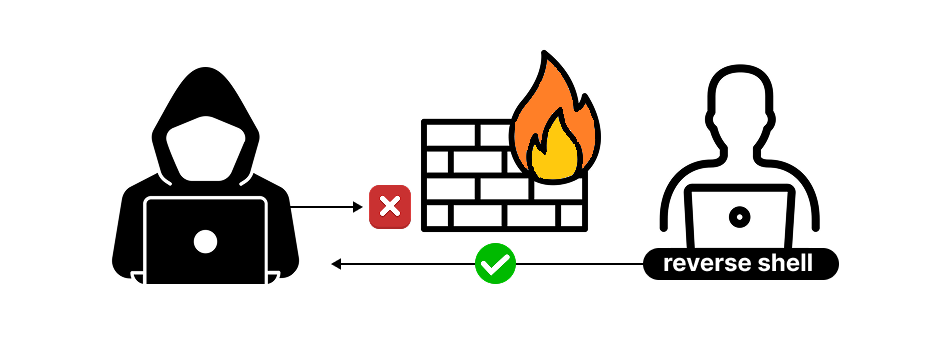

6. Post-Exploitation
You probably noticed once you've broken into the system, the real fun begins — and so does the responsibility. It's the phase, you explore what you've gained access to and evaluate how valuable it is.
This step is called Post-Exploitation. The goals usually are:
Once inside, an attacker could do much more than just peek around. Here are a few examples of what could happen post-exploitation:
After gaining access, an ethical hacker will explore:
A penetration tester must assess how important the compromised system is. Ask yourself:
In this simulation, we didn't actually install a persistent backdoor. But in the real world, attackers often leave behind ways to return later, even after the system is rebooted.
These methods could include:
In a real-world attack, an intruder would want to come back later — silently. This is done by setting up something called a reverse shell.
Why reverse? Because instead of the attacker connecting in (which would be blocked by firewalls), the target system connects out to the attacker's machine. This looks like normal traffic — like checking for software updates or browsing the web.
Once that connection is open, the attacker can control the system remotely. This is known as "phoning home." In real-world scenarios, attackers might even route their traffic through countries like China or North Korea to confuse investigations.
In real penetration tests, post-exploitation is where ethical boundaries matter most. You only go as far as the contract allows.
📜 In our simulation agreement, actions like planting backdoors or creating persistent access were marked as out of scope.
That said — this is a safe sandbox. So if you'd like to experiment with how backdoors work for learning purposes, you're totally welcome to. Just remember: in real life, these steps require strict permission — or you're crossing a legal line.
Great! Last but not least: